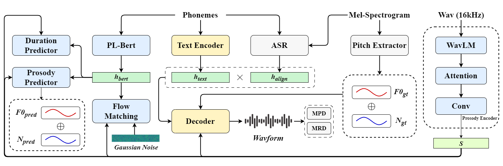
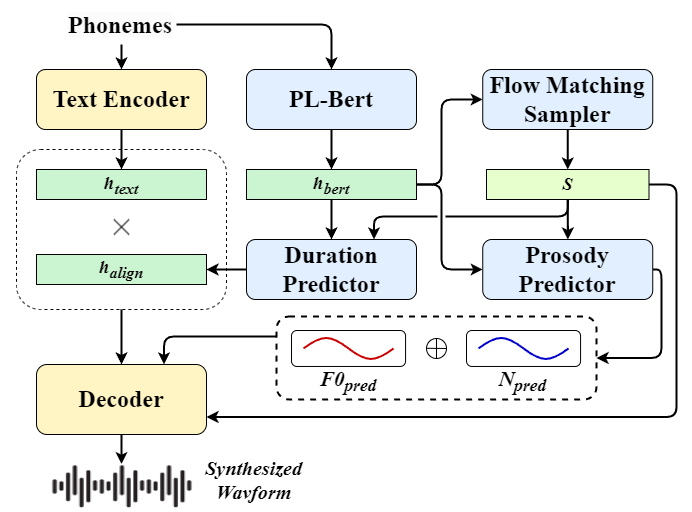

ProsodyFlow:
High-fidelity Text-to-Speech through Conditional Flow Matching and Prosody Modeling with Large Speech Language Models
Haoyu Wang, Sizhe Shan, Yinlin Guo, Yuehai Wang
Department of Information and Electronic Engineering, Zhejiang University, China
Submitted to COLING 2025
Abstract.
Text-to-speech (TTS) has seen significant advancements in high-quality, expressive speech synthesis.
However, achieving diverse and natural prosody in synthesized speech remains challenging.
We propose ProsodyFlow, an end-to-end TTS model that integrates large speech language models and the conditional flow matching algorithm to model prosodic features effectively.
Our approach leverages the speech LLMs to extract acoustic features, which are mapped into a prosody latent space, and utilizes conditional flow matching to predict prosodic vectors conditioned on text-derived encodings.
Experiments on the LJSpeech dataset show that ProsodyFlow improves synthesis quality and efficiency compared to existing models, achieving more prosodic and expressive speech.
Overview

Figure 1： ProsodyFlow modules training. The pitch extractor and ASR modules are pre-trained models with their parameters frozen. The prosody encoder utilizes the outputs from each layer of WavLM.

Figure 2： ProsodyFlow inference.
Comparision with other TTS models
| Text | Ground Truth | ProsodyFlow | FastSpeech 2 | GradTTS | StyleTTS 2 |
|---|---|---|---|---|---|
| In all these lines the facts are drawn together by a strong thread of unity. | |||||
| After the construction and action of the machine had been explained, the doctor asked the governor what kind of men he had commanded at Goree. | |||||
| After a few years of active exertion, the society was rewarded by fresh legislation. | |||||
| The invention of movable metal letters in the middle of the fifteenth century may justly be considered as the invention of the art of printing. |
Comparision with different number of function evaluations
| Text | Ground Truth | 1 step | 4 steps | 8 steps | 16 steps |
|---|---|---|---|---|---|
| The lax discipline maintained in Newgate was still further deteriorated by the presence of two other classes of prisoners who ought never to have been inmates of such a jail. | |||||
| Maltby and Co. would issue warrants on them deliverable to the importer, and the goods were then passed to be stored in neighboring warehouses. | |||||
| A bribe to the judge was certain to secure acquittal, and the neglect of the formality was as certainly followed by condemnation. | |||||
| And recognized as one of the frequenters of the bogus law-stationers. His arrest led to that of others. |
Ablation study of the proposed method
| Text | Ground Truth | Proposed | w/o WavLM | w/o prosody flow matching | w/o flow matching w/ diffusion |
|---|---|---|---|---|---|
| Let me retrace my steps, and speak more in detail of the treatment of the condemned in those bloodthirsty and brutally indifferent days. | |||||
| He was in consequence put out of the protection of their internal law, end quote. Their code was a subject of some curiosity. | |||||
| Accordingly they committed to him the command of their whole army, and put the keys of their city into his hands. | |||||
| Chapter seven. Lee Harvey Oswald: Background and Possible Motives, Part one. |